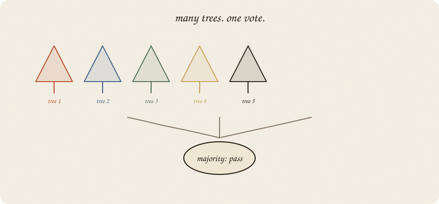
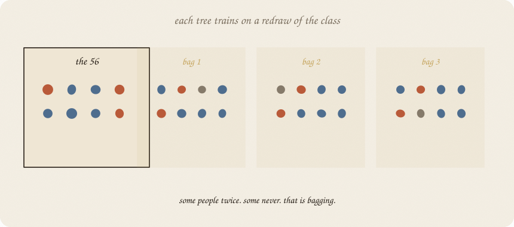
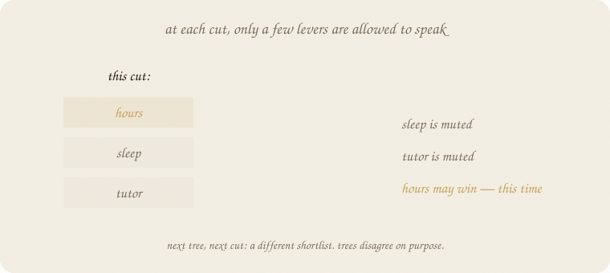
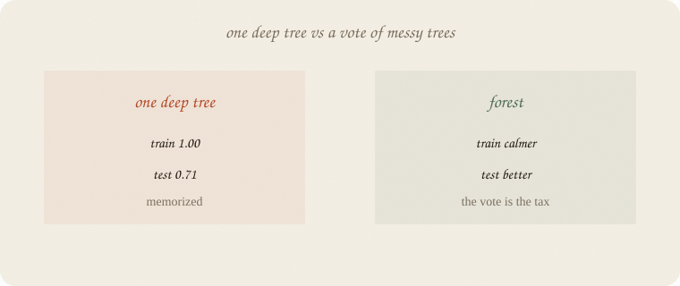

datazines · a sketchbook

Read 01 decision tree first. Same pass/fail exam. Same hours, sleep, tutor. One deep tree hit train 1.0 and test 0.71. This notebook is what you do with that gap.
Flip it like a notebook. One page = one idea. Done.
A tree’s first cut is the biggest Gini bite on this sample. Draw the 56 people again, get a different first cut. That jumpy first question is why a single tree is a brick, not a house.
The forest idea is rude and effective:
Grow lots of slightly wrong trees. Let them vote.
Wrong on purpose. Average out the drama.
Bagging. Each tree does not see the same 56 people. It gets a redraw with replacement: some students twice, some never. That bag is its whole world.

Random levers at each cut. Even in one bag, the tree is not allowed to always pick hours. At every split it is handed a shortlist (often √p of the features). Sleep might win this cut only because hours was muted.

Together: different people, different allowed questions. Trees start with different first cuts. On our data, tree 0 opened with sleep; tree 1 opened with hours. Same exam. Different bags.
If they all opened with hours, the vote would be one stump in a choir. The randomness is the point.
A new student walks in. Each tree casts fail or pass. Majority wins. (Or average the P(pass) from the leaves.)

You cannot read 100 flowcharts aloud. You traded a sentence for a stabler call. That is the cost, same family as ridge: less drama, less story.
One deep tree still sits in the forest as a member. It just does not get to decide alone. Ridge called that tree’s hug overfitting and taxed the knobs. Here the members may still memorize. The vote is what you ship. Overfit of one learner is not overfit of the choir.
House seed 7. Train 56 / test 24. Deep tree vs forest:
| model | trees | train acc | test acc |
|---|---|---|---|
| one deep tree | 1 | 1.000 | 0.708 |
| forest | 10 | 0.982 | 0.708 |
| forest | 50 | 1.000 | 0.792 |
| forest | 100 | 1.000 | 0.792 |
Ten trees: not enough vote — test still 0.71.
Fifty and a hundred: test 0.79, same as the honest stump, without you having to pick depth 1 by hand.
Train can still hit 1.0 on 56 people. The tax showed up on new people, which is the only score that counts. Feature importances (average Gini drop across trees): hours 0.68, sleep 0.30, tutor 0.03. Hours still first in aggregate. Sleep gets a voice it never had in the stump.
If you keep only one thing:
bag the people, shuffle the questions, vote. that is the forest.
Same pass/fail class as the tree notebook — eighty students, house seed 7.
import numpy as np
from sklearn.model_selection import train_test_split
from sklearn.tree import DecisionTreeClassifier, export_text
from sklearn.ensemble import RandomForestClassifier
rng = np.random.default_rng(7)
n = 80
hours = rng.uniform(1, 6, n)
sleep = rng.uniform(4, 9, n)
tutor = (rng.random(n) > 0.6).astype(float)
z = -3.2 + 1.05 * hours + 0.25 * (sleep - 6.5) + 0.7 * tutor
passed = (rng.random(n) < 1 / (1 + np.exp(-z))).astype(int)
X = np.column_stack([hours, sleep, tutor])
names = ["hours", "sleep", "tutor"]
Xtr, Xte, ytr, yte = train_test_split(X, passed, test_size=0.3, random_state=0)
deep = DecisionTreeClassifier(max_depth=8, random_state=7).fit(Xtr, ytr)
rf = RandomForestClassifier(n_estimators=100, random_state=7).fit(Xtr, ytr)
print("deep acc train/test", round(deep.score(Xtr, ytr), 3), round(deep.score(Xte, yte), 3))
print("rf acc train/test", round(rf.score(Xtr, ytr), 3), round(rf.score(Xte, yte), 3))
print("importances", dict(zip(names, rf.feature_importances_.round(3))))
print("tree 0 first cut:")
print(export_text(rf.estimators_[0], feature_names=names, max_depth=0), end="")
print("tree 1 first cut:")
print(export_text(rf.estimators_[1], feature_names=names, max_depth=0), end="")
deep acc train/test 1.0 0.708
rf acc train/test 1.0 0.792
importances {'hours': 0.676, 'sleep': 0.298, 'tutor': 0.026}
tree 0 first cut:
|--- sleep <= 4.88
| |--- truncated branch of depth 5
tree 1 first cut:
|--- hours <= 2.22
| |--- truncated branch of depth 5
Deep tree memorizes (test 0.71). Forest’s vote lands at 0.79. Tree 0 opened on sleep, tree 1 on hours — that is bag + random levers, not a bug.
n_estimators=100 is “how many voters.” max_features="sqrt" is sklearn’s default shortlist at each cut.
| word | meaning |
|---|---|
| bag / bootstrap | redraw people with replacement |
| max_features | how many levers may speak at a cut |
| n_estimators | how many trees vote |
| vote | majority class (or mean P) |
| importance | total impurity drop, averaged across trees |
Reach for it when one tree is jumpy; you want a strong default on tables with mixes; you do not need to read every rule.
Skip it when you must explain every cut (01 decision tree is the sentence); a line or logistic already fits; tiny n and you were going to grow huge trees anyway.
Pays you: the usual first ensemble. Better test than one deep tree. Importances that let sleep speak. Few knobs. Jumpy members + a vote — overfitting of one tree is not the forest’s score.
Costs you: the flowchart is gone. Train can still look perfect on small n. Not a cause machine. Sequential leftovers (boosting) are a different religion: 03 gradient boosting.
The choir. Next, trees in a line that hunt leftovers: 03 gradient boosting.
Flip it like a notebook. One page = one idea.